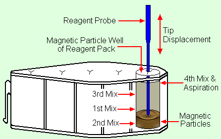

Ultrasonics Operating Principles
Purpose
This document details the operating principles for the ultrasonics.
Function
Ultrasonics are used to perform several functions critical to the processing of assays:
- Mix particles in reagent packs and reaction vessels.
- Mix fluid in reaction and dilution vessels.
- Sense sample fluid level in vessels.
- Aid in washing the reagent probe.
- Dry the reagent probe using sonication.
Reference Graphic

Component Description
| Term | Function / Description |
|---|---|
| Displacement, Tip |
|
| Level Sensing | Achieved by energizing the transducer with low power and moving the probe towards the sample until the probe contacts fluid. This contact with the fluid causes a phase shift between the voltage and current, which indicates fluid was found. |
| Mixing, Fluid |
|
| Mixing, Particle |
|
| Power Levels |
|
| Resonant Frequency |
|
| Temperature Control |
|
| Wash and Dry, Probe |
|
Particle Mixing

The steps for the particle mixing process:
- The probe is lowered to the first mix position, which is two-thirds of the way down from the level of the fluid. As the probe moves to this position, it passes through the reagent pack elastomer. If this is the first entry into the well, the probe punctures the prescored elastomer covering and barrier film.
- Power is applied to the transducer and the probe sonicates magnetic particles at the held frequency for 500 milliseconds.
- The probe is lowered into the second mix position and continues to mix particles for 500 milliseconds. This position is where the bottom of the well begins to taper.
- The probe is raised into the third mix position and continues to mix particles for 500 milliseconds. This position is one-third of the way down from the level of the fluid.
- The probe moves to the fourth mix position and continues to mix particles for 500 milliseconds.
- The probe aspirates the required volume of magnetic particles.